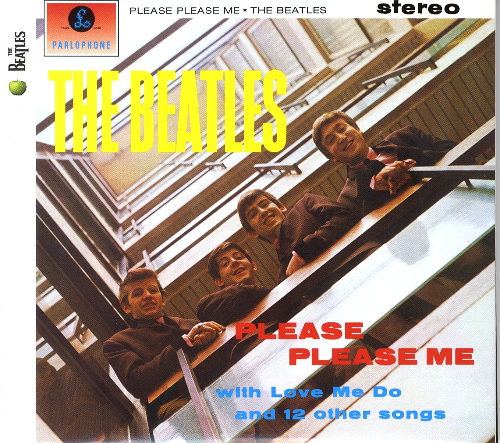

PLEASE PLEASE ME

"Please please me" fue grabado el 11 de febrero de 1963.la idea original fue hacer una grabacion en directo en The Cavern, en lugar donde habitualmente tocaba el grupo. Sin embargo,finalmente decidieron hacer la grabacion en un estudio, pero de forma que pareciera fuera en directo.
Seleccionaron los los mejores temas que The Beatles interpretaban en The Cavern y se encerraron en el estudio Abbey Road junto al productor George Martin en una secion de grabacion. Tras casi diez horas de grabacion el resultado fue un album casi en vivo, sin penas edicion, en el que se puede disfrutar la esncia mas geninua de los chicos de Liverpool.
El album esta constituido por 14 temas, la mayoria compuesta por Jhon Lennon y Paul McCartney. acontinuacion se les precentan las canciones del album: